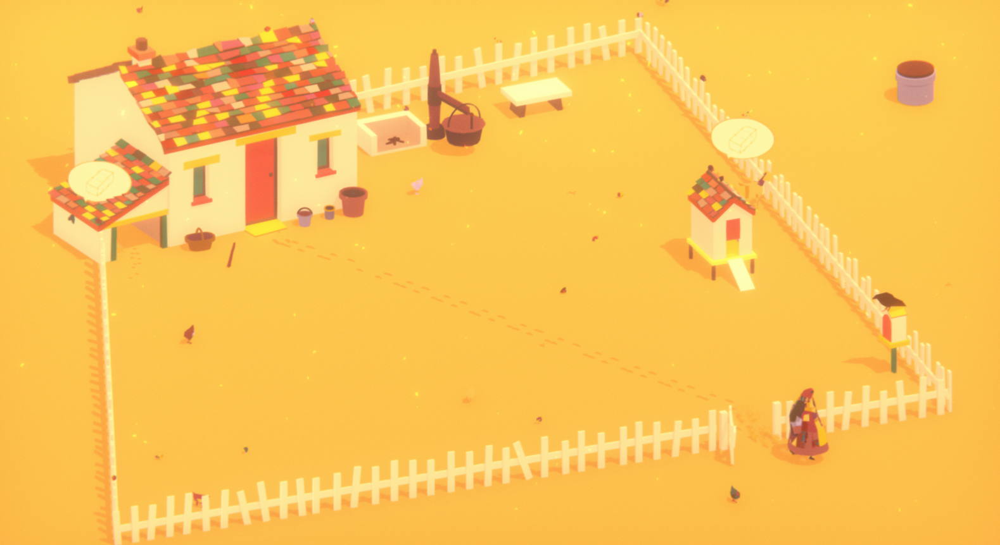
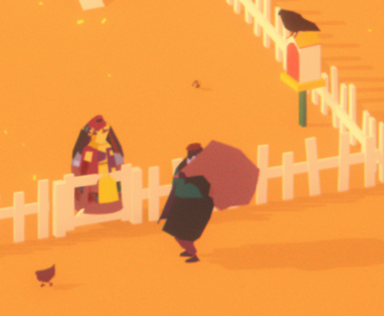

The game Where The Goats Are by MemoryofGod is a game that has a little more to it than it seems. When starting off in the game, you are loaded into a single-screen world that contains a house with farm animals and a white fence, seemingly in the middle of nowhere. The colors of the game are pretty simple. Mostly solid colors, no fades or anything such. The graphics are kept fairly simple and really add a sense of isolation to the game, like nice calming alone time. The game also contains a daylight cycle. It will gradually shift through days seemingly every 5 minutes and gives your character a chance to break. The character goes inside at nights by either you leading her there or eventually forced upon you by the game.

Area of play in Where The Goats Are.
The main character that you use to navigate and interact with things is Tavikah. She is the only playable character in the game, however there is a trader/mailman that stops by. With this trader, you can buy and sell hay, cheese, goats, and you can also collect your mail. Mail comes from relatives giving updates on things in their lives. It is an interesting touch to the game that I haven't found a purpose for. Tavikahs options for tasks are very limited. When playing the game, there is a lot of things to discover at first. You are able to pick up a watering can and head to the well (which is the only constantly accessible object outside the fence) to get water for your plants, pick up a stick to just draw in the dirt with, there is birds and a bird house, chickens and a chicken coop, and milk goats and make cheese from it. Also from what I found, you can not starve the goats, my game ended up freezing during a night change and ahd to restart after that.

Tavikah speaking with the Trader/Mailman.
This game had a lot enjoyable aspects to it that pretty much sucked me into the game, but it also had a few things to touch up on. The good that I liked and found to be a nice touch to the game was when Tavikah is in her house. The game actually lets you see her get up from a seat in the house and come out, or she will come from somewhere else withing the house. It's small attention to detail to something I was hoping actually had some which was great. The music was calming and the colors were easy on the eyes. Lets get into my recommendations to fix. WHen Tavikah was in her house, at times she would be sticking through the wall and actually clickable (wave option appears). Also another issue came with the items and when night comes around. Tavikah would instantly drop the item she was holding reguardless if it would be put behind and unclickable item such as the fence itself (which happened to me). I later on found a "reset objects" button with the ESC menu above the quit button. That would have been helpful information as I used the window (x) to close the game rather than through game settings.